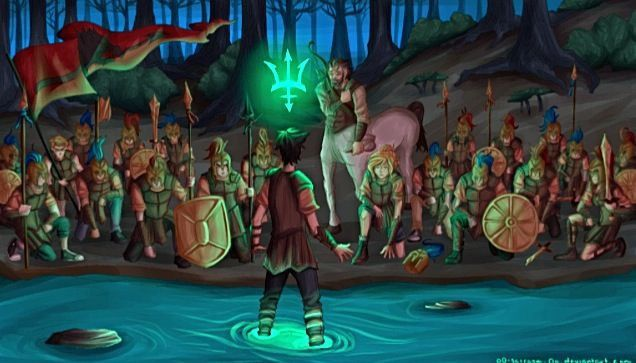
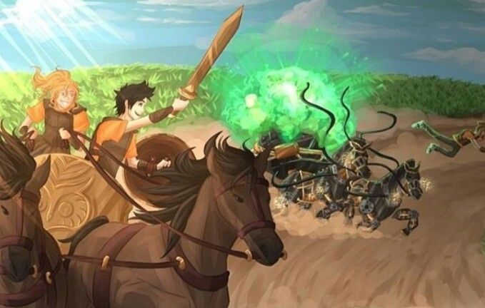

Bom esse site e para falar das minhas leituras, mas eu só li quatro livros que é da saga Percy Jackson, então nesse site eu vou falar sobre os quatro livros de Percy Jackson.
Bom o Ladrão de raios começa contando a história de Percy Jackson um garoto problema de apenas doze anos que tem experiências estranhas em que deuses e monstros mitológicos parecem saltar das páginas dos livros direto para a sua vida. Pior que isso: algumas dessas criaturas estão bastante irritadas. Um artefato precioso foi roubado do Monte Olimpo e Percy é o principal suspeito. Para restaurar a paz, ele e seus amigos jovens heróis meio-sangues terão de fazer mais do que capturar o verdadeiro ladrão: precisam elucidar uma traição mais ameaçadora que a fúria dos deuses.
O livro narra as aventuras de Percy Jackson, um semideus de treze anos, que junto de seus amigos heróis meio-sangues Chase e Tyson, se aventura no Mar de Monstros a fim de salvar seu amigo Grover Underwood do ciclope Polifemo e encontrar o Velocino de Ouro, artefato mágico capaz de fortalecer as fronteiras do Acampamento Meio sangue.
Quando um dos membros do grupo desaparece, cabe a Percy e seus amigos, mais uma vez, tentar entender e resgatar essa pessoa antes que uma nova profecia terrível se cumpra. As forças de Cronos estão crescendo, e o tempo corre contra nossos heróis em sua nova jornada atravessando os Estados Unidos.

De volta ao Acampamento Meio-Sangue, ele descobre que o exército inimigo, servidores de Cronos, está com um plano de invasão. E pretende usar o Labirinto de Dédalo para atacar o Acampamento, uma vez que esse Labirinto corre por todo o país numa camada subterrânea. Cabe a heróis meio-sangues, desta vez, liderar a missão para encontrar Dédalo e tentar trazê-lo para o lado dos deuses; a Percy, Tyson e Grover, acompanhá-la nos confins de corredores cheios de perigos mortíferos.